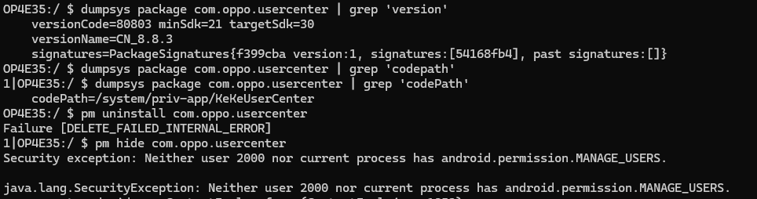

删除 OPPO ColorOS 7.2 的账号 com.oppo.usercenter_ACCOUNT_NAME 以取得设备管理员权限
回去之后，家里一台 OPPO 挺老了，然后屏幕又老化的挺厉害，卖二手又不划算，干脆精简一下了
所以想到使用 shizuku + dhizuku 等一系列工具对系统进行精简
然而 dhizuku 需要设备管理员权限，而获取该权限需要系统上不存在任何账号，其他一般的应用账号删除都很轻松
1 | dpm set-device-owner com.rosan.dhizuku/.server.DhizukuDAReceiver |
但是当只剩下一个 com.oppo.usercenter_ACCOUNT_NAME 账号时，删除它就会提示无法删除，因为它是系统账号
1 | java.lang.IllegalStateException: Not allowed to set the device owner because there are already some accounts on the device |
使用 dumpsys accounts 命令可以看到这个账号的存在
1 | Account {name=com.oppo.usercenter_ACCOUNT_NAME, type=com.usercenter.account_ACCOUNT_TYPE} |
想到使用命令删除
1 | adb shell pm clear com.oppo.usercenter |
然而这是不管用的，会提示权限不足，无法删除这个账号
网上给的解决方法是重置系统，因为不是给我用，上面的一些数据不能删除，所以进行摸索，找出了不用清除数据的办法。
步骤
进入设置 - 点进去 OPPO 账号 - 选择退出（需要删除所有数据）
调查问题
发现是
com.oppo.usercenter这个应用（我的 OPPO）的账号，所以我们需要删除这个应用的数据安装
scene，使用 adb 模式进入应用管理，找到com.oppo.usercenter应用，清除数据卸载
com.oppo.usercenter应用还是使用scene，对这个应用进行卸载然后再次查看dumpsys accounts，发现账号已经被删除了重新使用命令激活设备管理员
dpm set-device-owner com.rosan.dhizuku/.server.DhizukuDAReceiver
成功获取设备管理员权限了找回
com.oppo.usercenter应用还是在scene中，应用管理 - 找回应用重启手机，完毕
感想
国产手机里往系统里塞一堆功能，看似很方便，但实际上很多功能都是鸡肋，在实际生活中，这些功能普通人根本不会使用，反而会占用系统资源，导致系统变慢变卡。
当我拿到这个手机的时候，那些功能实际还是第一次使用，所以我果断精简了它们，手机又变得流畅了。
网上那些 玩机博主、极客们整天吹鼓着这些功能，然后原生系统就是毛坯房不能用云云，但是真的能代表大多数手机用户吗？